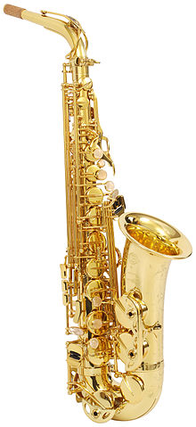

The saxophone (also referred to as the sax) is a family of woodwind
instruments. Saxophones are usually made of brass and played with a single-reed
mouthpiece similar to that of the clarinet. The saxophone family was invented by
the Belgian instrument maker Adolphe Sax in 1840.
Adolphe Sax wanted to create a
group or series of instruments that would be the most powerful and vocal of the
woodwinds, and the most adaptive of the brass instruments, that would fill the
vacant middle ground between the two sections. He patented the saxophone on June
28, 1846, in two groups of seven instruments each.
Each series consisted of
instruments of various sizes in alternating transposition. The series pitched in
B♭ and E♭, designed for military bands, have proved extremely popular and most
saxophones encountered today are from this series.
Instruments from the
so-called "orchestral" series, pitched in C and F, never gained a foothold, and
the B♭ and E♭ instruments have now replaced the C and F instruments when the
saxophone is used in an orchestra.
The saxophone is used in classical music (such as concert bands, chamber music,
and solo repertoires), military bands, marching bands, and jazz (such as big
bands and jazz combos). Saxophone players are called saxophonists.

The saxophone was developed in 1846 by Adolphe Sax, a Belgian instrument maker,
flautist, and clarinetist. Born in Dinant and originally based in Brussels, he
moved to Paris in 1842 to establish his musical instrument business.
Prior to
his work on the saxophone, he had made several improvements to the bass clarinet
by improving its keywork and acoustics and extending its lower range. Sax was
also a maker of the then-popular ophicleide, a large conical brass instrument in
the bass register with keys similar to a woodwind instrument.
His experience
with these two instruments allowed him to develop the skills and technologies
needed to make the first saxophones.
As an outgrowth of his work improving the
bass clarinet, Sax began developing an instrument with the projection of a brass
instrument and the agility of a woodwind. He wanted it to overblow at the
octave, unlike the clarinet, which rises in pitch by a twelfth when overblown.
An instrument that overblows at the octave has identical fingering for both
registers.
Sax created an instrument with a single-reed mouthpiece like a clarinet, conical
brass body like an ophicleide, and some acoustic properties of both the horn and
the clarinet.
Having constructed saxophones in several sizes in the early 1840s, Sax applied
for, and received, a 15-year patent for the instrument on June 28, 1846.The
patent encompassed 14 versions of the fundamental design, split into two
categories of seven instruments each, and ranging from sopranino to contrabass.
Although the instruments transposed at either F or C have been considered
"orchestral", there is no evidence that Sax intended this. As only three percent
of Sax's surviving production were pitched in F and C, and as contemporary
composers used the E♭ alto and B♭ bass saxophone freely in orchestral music, it
is almost certain that Sax experimented to find the most suitable keys for these
instruments, settling upon instruments alternating between E♭ and B♭ rather than
those pitched in F or C, for reasons of tone and economy (the saxophones were
the most expensive wind instruments of their day).
The C soprano saxophone was
the only instrument to sound at concert pitch. All the instruments were given an
initial written range from the B below the treble staff to the F, one space
above the three ledger lines above staff, giving each saxophone a range of two
and a half octaves.
Sax's patent expired in 1866 thereafter, numerous saxophonists and instrument
manufacturers implemented their own improvements to the design and keywork. The
first substantial modification was by a French manufacturer who extended the
bell slightly and added an extra key to extend the range downwards by one
semitone to B♭.
It is suspected that Sax himself may have attempted this
modification. This extension is now commonplace in almost all modern designs,
along with other minor changes such as added keys for alternate fingerings.
Using alternate fingerings allows a player to play faster and more easily. A
player may also use alternate fingerings to bend the pitch.
Some of the
alternate fingerings are good for trilling, scales, and big interval jumps.
Sax's original keywork, which was based on the Triebert system 3 oboe for the
left hand and the Boehm clarinet for the right, was simplistic and made playing
some legato passages and wide intervals extremely difficult to finger, so
numerous developers added extra keys and alternate fingerings to make chromatic
playing less difficult.
While early saxophones had two separate octave vents to
assist in the playing of the upper registers just as modern instruments do,
players of Sax's original design had to operate these via two separate octave
keys operated by the left thumb. A substantial advancement in saxophone keywork
was the development of a method by which the left thumb operates both tone holes
with a single octave key, which is now universal on modern saxophones.
Further
developments were made by Selmer in the 1930s and '40s, including offsetting
tone holes and a revamping of the octave key mechanism, beginning with balanced
action instruments and continuing through their celebrated Mark VI line. One of
the most radical, however temporary, revisions of saxophone keywork was made in
the 1950s by M. Houvenaghel of Paris, who completely redeveloped the mechanics
of the system to allow a number of notes (C♯, B, A, G, F and E♭) to be flattened
by a semitone simply by pressing the right middle finger.
This enables a
chromatic scale to be played over two octaves simply by playing the diatonic
scale combined with alternately raising and lowering this one digit. However,
this keywork never gained much popularity, and is no longer in use.
Description:
The saxophone consists of an approximately conical tube, usually of thin brass,
flared at the tip to form a bell. At intervals along the tube are between 20 and
23 tone holes of varying size and two very small vent holes to assist the
playing of the upper register.
These holes are covered by keys (also known as
pad cups), containing soft leather pads, which are closed to produce an airtight
seal. At rest some of the holes stand open and others are closed. The keys are
activated by keytouches pressed by the fingers, either directly on the pad cup
or connected to it with levers, either directly or with joints called
"linkages."
The right thumb sits under a thumb rest to stabilize and balance the
saxophone, while the weight of most saxophones is supported by a neckstrap
attached to a strap ring on the rear of the body of the instrument. The
fingering for the saxophone is a combination of that of the oboe with the Boehm
system, and is very similar to the flute or the upper register of the clarinet.
Instruments that play to low A have a left thumb key for that note.
The simplest design of saxophone is a straight conical tube, and the sopranino
and soprano saxophones are usually of this straight design.
However, as the
lower-pitched instruments would be unacceptably long if straight, for ergonomic
reasons, the larger instruments usually incorporate a U-bend ("bow") at, or
slightly above, the third-lowest tone hole.
As this would cause the bell of the
instrument to point almost directly upward, the end of the instrument is either
beveled or tilted slightly forward. This U-shape has become a distinctive
feature of the saxophone family, to the extent that soprano and even sopranino
saxes are sometimes made in the curved style, even though not strictly
necessary.
By contrast, tenors and even baritones have occasionally been made in
the straight style. Most commonly, however, the alto and tenor saxophones
incorporate a detachable, curved "neck" above the highest tone hole, directing
the mouthpiece to the player's mouth while the instrument is held in a playing
stance.
The baritone, bass, and contrabass saxophones accommodate the length of
the bore with extra bows and right angle bends between the main body and the
mouthpiece.
Materials:
Most saxophones, both past and present, are made from brass. Despite this, they
are categorized as woodwind instruments rather than brass, as the sound waves
are produced by an oscillating wood reed, not the player's lips against a
mouthpiece as in a brass instrument, and because different pitches are produced
by breath wind passing opening and closing keys.
The screw pins that connect the
rods to the posts, as well as the needle and leaf springs that cause the keys to
return to their rest position after being released, are generally made of blued
or stainless steel. Since 1920, most saxophones have "key touches" (smooth
replaceable pieces placed where the fingers touch the instrument) made from
either plastic or mother of pearl. Recently, some saxophones are offered with
abalone or stone keytouches.
Other materials have been tried with varying degrees of success, such as the
1950s Grafton plastic alto saxophone and its recent successor, the polycarbonate
saxophone, VibratoSax. There is also the wooden Sawat saxophone created in
Thailand on a small scale.
Recent years have seen the use of higher copper
alloys substituted for the "yellow brass" or "cartridge brass" that are most
common, for visual and tonal effect. Yanagisawa's 902 and 992 series saxophones
are made with phosphor bronze, which is claimed to offer slightly different,
more "vintage" tonal qualities from the brass 901 and 991 models of identical
design.
Other saxophones made of high copper alloys are sold under the brands
Chateau, Kessler, Saxgourmet, and Bauhaus Walstein.
Yanagisawa and other
manufacturers, starting with the King Super 20 around 1950, have made saxophone
necks, bells, or entire instruments from sterling silver. Keilwerth and P.
Mauriat have made saxes with a nickel silver body. Opinions vary on the
significance of body materials to sound. With the exception of the identical
brass and phosphor bronze Yanagisawa models, opportunities to isolate body
materials from other variables in design and construction are lacking.
Prior to final assembly, the manufacturers usually apply a thin coating of clear
or colored acrylic lacquer, or silver plate, over the bare brass.
The lacquer or
plating serves to protect the brass from oxidation, and maintains its shiny
appearance. Several different types and colors of surface finish have been used
over the years.
It is also possible to plate the instrument with nickel or gold,
and a number of gold-plated saxophones have been produced. Plating saxophones
with gold is an expensive process because gold does not adhere directly to
brass. As a result, the brass is first plated with silver, then gold.
Some players, sellers, and repair technicians argue that the type of lacquer or
plating, or absence thereof, may enhance an instrument's tone quality.
The
possible effects of different finishes on tone are difficult to isolate from the
other variables that affect an instrument's tone colors. In any case, what
constitutes a pleasing tone is a matter of personal preference.
Mouthpiece and reed:
The saxophone uses a single-reed mouthpiece similar to that of the clarinet.
Most saxophonists use reeds made from Arundo donax cane, but since the 20th
century some have also been made of fiberglass and other composite materials.
Saxophone reeds are proportioned slightly differently from clarinet reeds, being
wider for the same length, although some soprano saxophonists use clarinet reeds
on the soprano saxophone. Each size of saxophone (alto, tenor, etc.) uses a
different size of reed. Reeds are commercially available in a vast array of
brands, styles, and strengths.
Players experiment with reeds of different
strength (hardnesses) and material to find which strength and cut suits their
mouthpiece, embouchure, physiology, and playing style.
The saxophone mouthpiece is larger than that of the clarinet, has a wider inner
chamber, and lacks the cork-covered tenon of a clarinet mouthpiece because the
saxophone neck inserts into the mouthpiece whereas the clarinet mouthpiece piece
is inserted into the barrel.
Saxophone and clarinet embouchures differ from each
other in firmness, position of the lower lip, and range of entry angles. The
"long tones" exercise is used to develop embouchure, along with airstream and
breath control.
Mouthpieces come in a wide variety of materials, including vulcanized rubber
(sometimes called hard rubber or ebonite), plastic, and metals such as bronze or
surgical steel. Less common materials that have been used include wood, glass,
crystal, porcelain, and even bone.
According to Larry Teal, the mouthpiece
material has little, if any, effect on the sound, and the physical dimensions
give a mouthpiece its tone colour. There are examples of "dark" sounding metal
pieces and "bright" sounding hard rubber pieces – Marcel Mule, for example, used
a metal mouthpiece to perform classical music.
Somecontend that instability at
the mouthpiece/neck connection moves harmonic frequencies off series with the
fundamental frequency and each other, resulting in a "spread" sound, and that
the weight of a metal mouthpiece counteracts that instability, increasing tonal
"focus." Mouthpiece design has a profound impact on tone.
Early mouthpieces were designed to produce a warm and round sound for classical
playing. Among classical mouthpieces, those with a concave ("excavated") chamber
are more true to Adolphe Sax's original design; these provide a softer or less
piercing tone favored by some saxophonists, including students of Sigurd
Raschèr, for classical playing.
Saxophonists who follow the French school of
classical saxophone playing, influenced by Marcel Mule, generally use
mouthpieces with smaller chambers than Rascher style mouthpieces. The use of the
saxophone in dance orchestras and jazz ensembles put a premium on dynamic range,
projection, and tonal richness, leading to rapid innovation in chamber shape and
tip design, and metal construction.
At the opposite extreme from the classical
mouthpieces are those with a small chamber and a low clearance above the reed
between the tip and the chamber, called high baffle. These produce a bright
sound with maximum projection, suitable for having a sound stand out among
amplified instruments and typical of modern pop and smooth jazz.
vMost
saxophonists who play different styles have a mouthpiece suited for each style.
Saxophone family:
The primary (military band) saxophone family alternates instruments in B♭ and
E♭. The other (orchestral) family patented by Sax, alternating instruments in C
and F, has always been marginal, although some manufacturers tried to popularise
the soprano in C (C soprano saxophone), the alto in F (mezzo-soprano saxophone),
and the tenor in C (C melody saxophone) early in the twentieth century.
The C
melody enjoyed some success in the late 1920s and early 1930s as a parlor
instrument. One company has recently revived production of the C soprano and C
melody. Instruments in F are rare. A mezzo-soprano in G has also been produced.